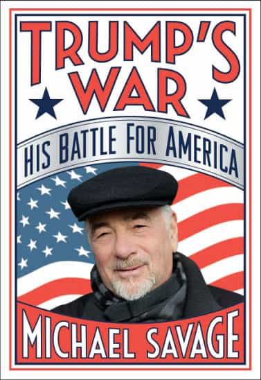
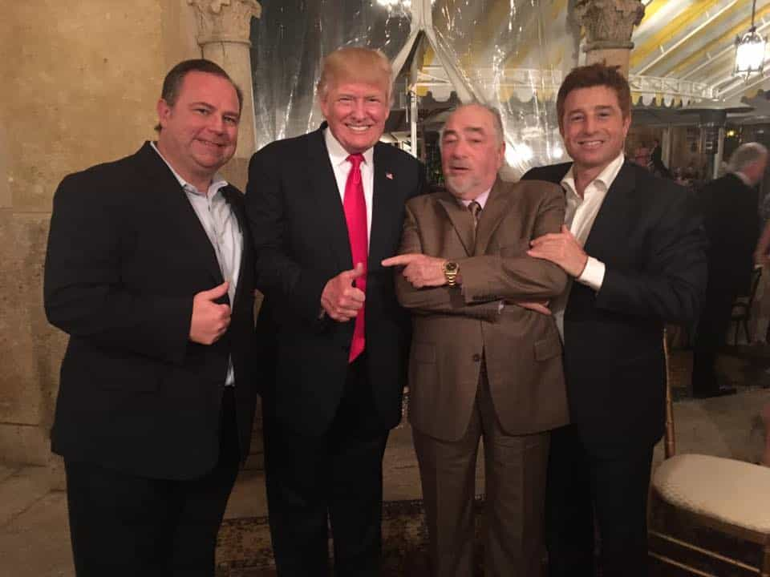

Mr. Luthra is an author and artist who writes about news, fitness, culture, and anything else that meets his interests. If you like his style, visit The Straightforward Voice, where you can find more FREE content.


Michael Savage, the popular talk radio host of the Michael Savage show, was assaulted by a man at a San Francisco restaurant this month. According to reports, the tall man knocked away Savage’s ten pound pet poodle, Teddy, and knocked the 74-year-old Savage to the ground. A Good Samaritan arrived to help, but was also met with the ground from the violent attacker. The man fled and police are still investigating.
Thankfully, Savage sustained minor injuries. However, it is appalling how this coward attacker wasn’t charged for assaulting a senior citizen and animal abuse for his actions. On Savage’s show, he expressed his frustration at how someone could get away with this and why there was little to no mass media coverage.
Savage had his attorney, Daniel Horowitz, on air detailing how California’s laws has loopholes allowing the attacker to possibly get away, and because Savage was not bleeding in a hospital bed, this coward is using the law to escape. Savage is going to pursue however, until justice is served as he has a case being a victim of assault. What is odd is how and why this happened.

It is ironic that this attack happened just after Savage released his brand new book, Trump’s War, which officially hit the book shelves just before the attack where Savage reveals how the Media, along with corrupt international globalists like George Soros, are waging a real war against the Trump administration by funneling money to lobbyists and third party groups like Black Lives Matter.
Savage also lists the names of organizations funded by Soros and spills the beans on other corrupt activities by CNN, and other media. The book contains names in a truly tell like it is fashion. So, it is very suspicious how this attack occurred right after the release of the book.
This isn’t the first time however, that Savage has been scrutinized for his words. He has been banned from entering Britain, being placed on a list with international terrorists for simply speaking against the corrupt political machine.
Savage coined this term a while ago, and has spoken out against Angela Merkel’s actions in Germany of allowing obscene amounts of refugees to enter leading to the rampant rapes and assaults of German people.
Although Trump’s message has won him the votes of millions, Savage has been exposing the enemy globalists within the United States, and that Radical Islamic terrorism must be stopped before they hijack the entire planet.

Being in the radio business for over sixteen years, his message has always been the same – BORDERS, LANGUAGE, and CULTURE. When Trump officially announced his run for the presidency, Savage was the first to support him from the beginning to the very end as he saw Trump as the only candidate son capable of beating Hilary. Although an imperfect man, Trump far exceeded the competition with his charisma and straightforward honesty as unlike other politicians, he couldn’t be bought.

Savage is an outspoken supporter of Trump, calling out liberal frauds by name such as Nancy Pelosi, Barbara Boxer, and billionaire manipulators like George Soros and Mark Zuckerberg. Could this be why he was assaulted? If it was a paid hit job, it won’t be a surprise. Glenn Beck admitted to being attacked when speaking out against Soros. Many others have also been subject to the “treatment” for blowing the whistle too loud too often. So is this what happens now?
It seems that the law favors criminals allowing them to get away with violence and even murder. Countless incidents have occurred in California by illegal immigrants and “protestors” against Trump supporters or even just innocent people minding their own business.
This man knew what he was doing he had an agenda as if on a mission. It was as if he was waiting for Savage outside of the restaurant waiting to strike.
Whatever your political views are, you may strongly dislike or hate someone, and may even think about punching them. However, thinking and doing is a big difference. For a person to go out of their way to track someone solely for beating them up must have a big motivation. Anger and hatred is one, but most won’t do it fearing the law. However, if given a lump sum as well as legal support the incentive becomes too tempting.
It has already been revealed that so called “protestors” have received funds from unknown sources to cause trouble. With all the attacks done to Trump supporters lately, it could be possible this was a paid attacker. The question is by whom.
What we do know is that Savage is a powerful force for the Trump campaign. Even Donald Trump himself said he was put in office thanks to The Savage Nation. Both men have met on multiple occasions and dined together. Savage’s show is number one in online radio yet he’s never mentioned on mainstream media.
Regardless, this behavior is unacceptable and must stop. Trump supporters, famous or not, are not to be subject to violence without punishment.
Despite the cowardly attack from this unknown assailant, Savage is back on air and continues to tell it like it is. Whether this was a paid thug by the dark government is irrelevant. The media tries to relate Trump supporters in the same category as criminals, but Savage is more determined than ever and Americans should never be intimidated by the progressive left for their political views.
Read More: Talk Radio Host Michael Savage Is The Latest Casualty Of Leftist Censorship